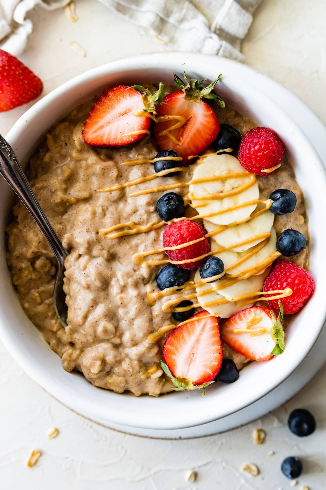

Protein Oatmeal

Image from eatingbirdfood!
Ingredients
- 1 cup - oatmeal
- 1/2 cup - water
- 1 sliced banana
- 1 tbsp of peanut better
Instructions
- Put cup of oatmeal into a bowl
- Add the 1/2 cup of water (milks works as well)
- Cover the bowl and microwave for 2 minutes
- Stir and wait 2 minutes for it to rest (Make sure oatmeal doesn't explode!)
- Add fruit and peanut butter (1 scoop of whey protein works as well)
Homepage